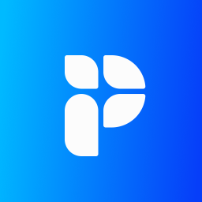

The Grok Bot delivery team
13 Bots, 1 room, 2 routines. The client's Puzzle workspace is the shared memory.You
The consultantGoals, approvals, the five human things
CS
Chief of StaffRoutes work to Claude Code. Daily note.
FM
ForemanBuilds Bots and skills on request
DL
Delivery LeadPlans, routes, gates. Never executes.
RW
Recap WriterEmails and task lists from every call
TR
TrainerDeck, Looms, rollout emails
CM
Current State MapperInterview guide, the map
TS
Tech Stack ResearcherOptions, pricing, demo prep
PC
Product Changes ResearcherReleases mapped to steps. Monthly.
PA
Process ArchitectFuture state map, the roadmap
IA
Impact AnalystROI before, Innovation Report after
BS
Build SpecialistSpecs, tracker, test plans
DC
Data CleanerOptional. Migration prep.
CH
Change ManagerThe changelog, the request window
Leadership
Coordination (the CSM lane)
Architecture (the SA lane)
Cross-cutting
Optional
Delivery Room · the group chat where the hand-offs happen